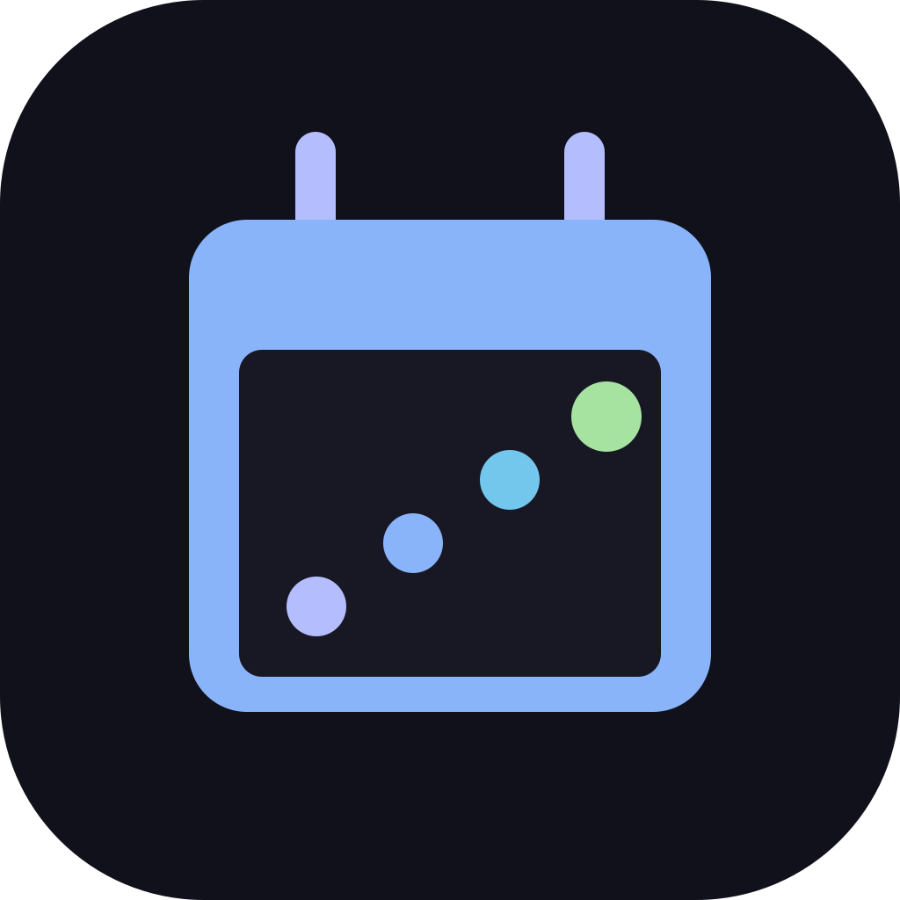
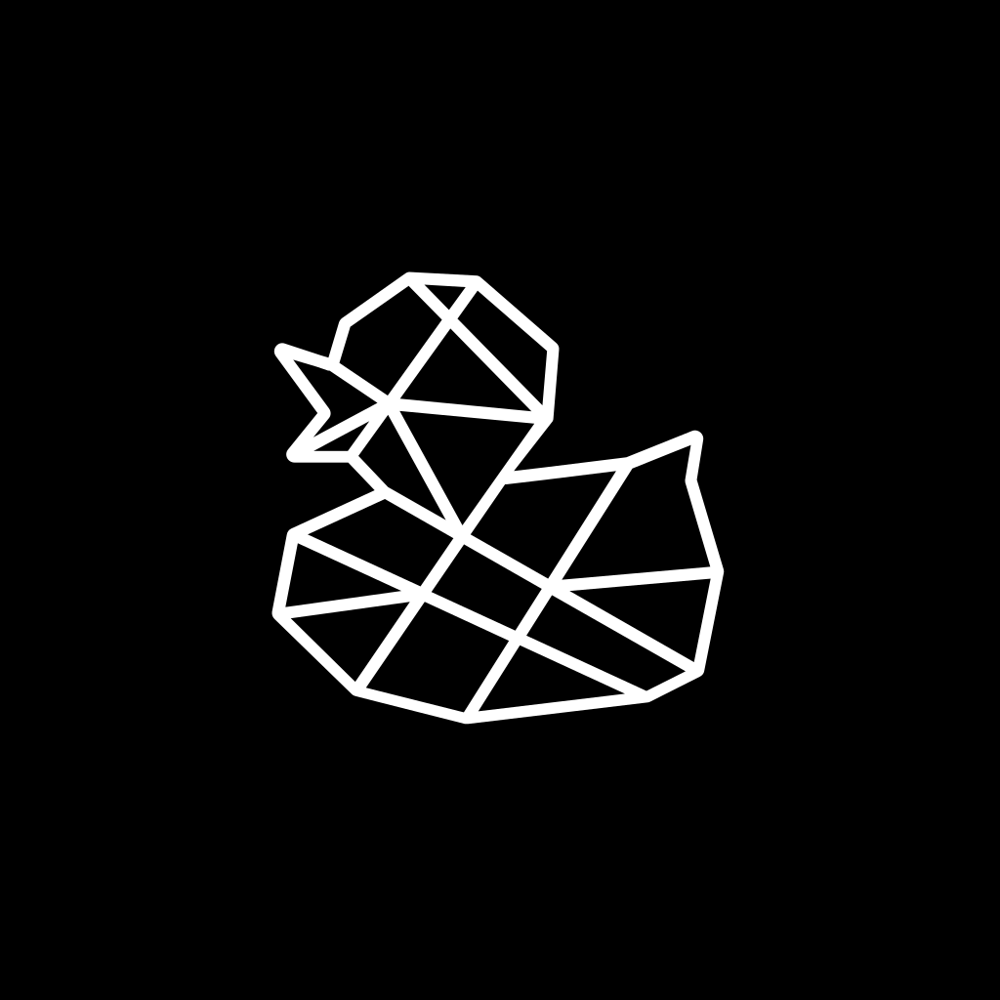
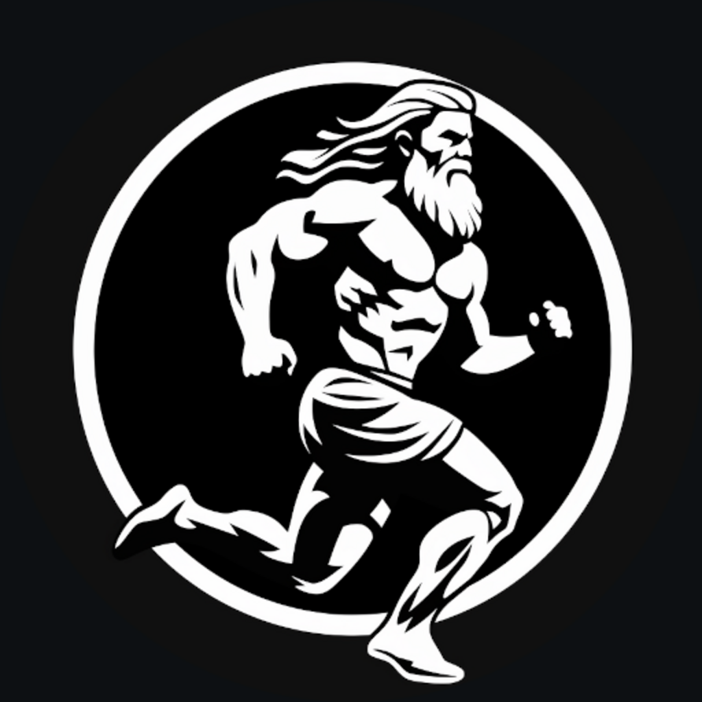
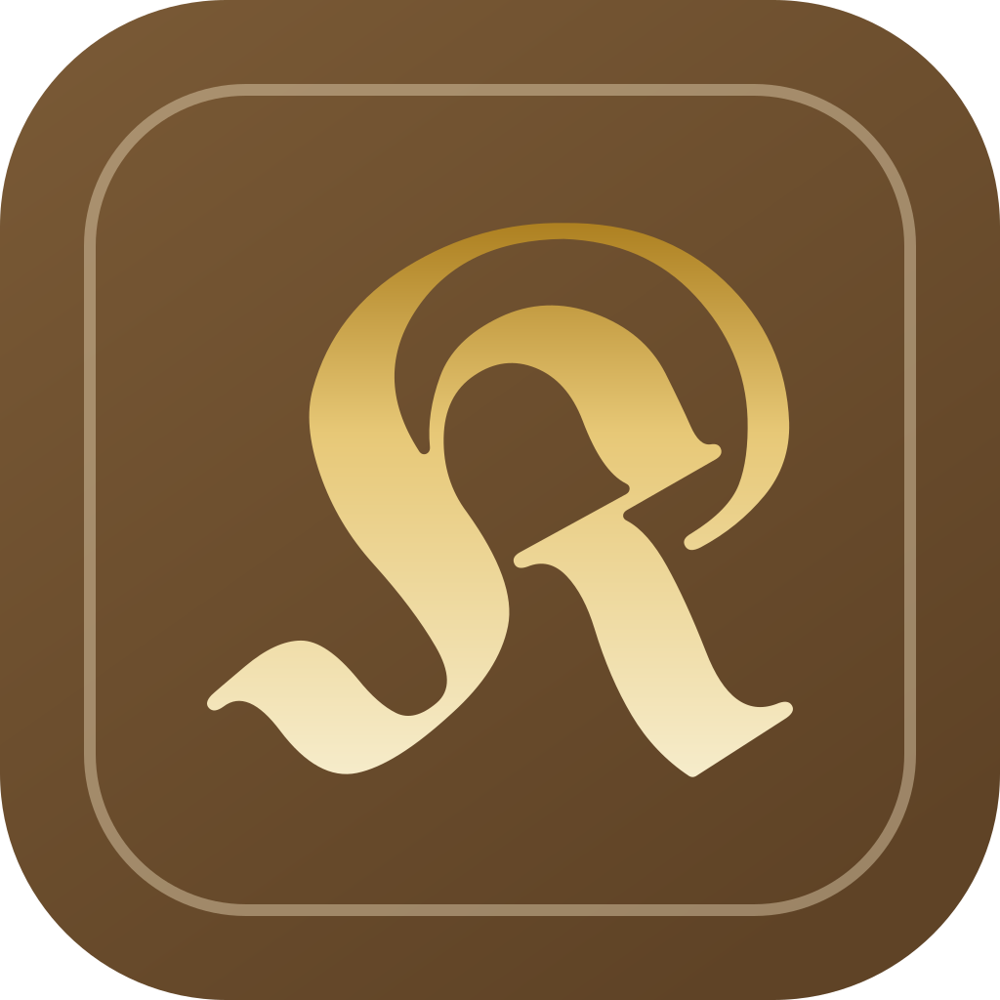

Screens
What you see on the phone.


Shared node for Logos apps
Loam is an Android app you install once; your Logos apps share its node. One connection to the Logos network for every app on your phone, with no server in between.
On the desktop, Basecamp apps get the same thing from the loam_core module, which they install automatically.
Screens
Ten apps, one node, and you decide who uses it.
Without Loam, every Logos app on your phone runs its own node: its own connections, its own discovery, its own battery drain. Loam runs one node in its own process and lets every app share it.
Apps keep their data and their encryption to themselves. They seal each event before handing it to Loam, so Loam just carries ciphertext between your devices and the people you share with.
A single foreground service keeps one connection to the Logos network (Logos Delivery) for the whole phone. Apps bind to it instead of starting their own.
The first time an app wants the node, Loam shows “Allow an app to use Loam?”. Approval is tied to the app's package and signing key, so a re-signed copy has to ask again. You can revoke it any time.
Loam keeps listening for an app after you close it and holds its (still sealed) messages. When you reopen the app it picks them up straight away instead of re-syncing. On by default, switchable per app.
When the internet drops, nearby phones running Loam can pass the same sealed messages to each other over Bluetooth, then go back to the network when it returns. Android only for now.
Every event your apps write is signed. On the desktop, loam_core holds your keys and signs for the apps, so they never touch a private key. On Android the same identity code still runs inside each app and is moving into Loam. Keycard support is experimental.
Loam is recommended, not required. If it isn't installed, each app falls back to running its own node and still syncs. You only lose the sharing, the cache and the Bluetooth mesh.
How it works
Dig down from an app and this is what holds it up: the node it talks to, the engine that makes every device agree, and the transport that reaches the next device.
The shared node. On Android it is the Loam app: one node in a foreground service, shared by every approved app, which also runs the experimental Bluetooth mesh. On the desktop the loam_core Basecamp module does the same job for Basecamp apps.
The agreement engine inside each app. An event-log CRDT with HLC ordering and range-based set reconciliation: every device folds the same events into the same state, in any arrival order, without losing a write.
The client library apps build on. It talks to the Loam app when it is installed and falls back to an embedded node when it isn't. Two bearers: Logos Delivery, and the experimental Bluetooth mesh. A message that arrives over both is counted once.
No server is in the critical path. Each app keeps its own history on your device and works alone; it syncs whenever another device is reachable.
On Android, when the Logos network is out of reach, Loam switches on its Bluetooth mesh so phones in the same room can keep syncing, then returns to the network when it's back.
Every write is an event folded by a CRDT. Two people editing the same thing offline both keep their change, and every device ends up with the same state.
Apps encrypt end to end before anything leaves them. Loam, relays and store nodes see sealed bytes plus routing metadata (topic, size, timing), never the content. Loam can't read any app's traffic, and apps can't read each other's.
What grows here
Each one is shared, multi-writer state over Loam: no backend of its own, offline by default, kept on your devices. All of them run on Android and Basecamp.

A shared calendar. Devices converge offline and every calendar is signed by your own key. Keycard support is experimental.
calendar · website ↗
Live Q&A for a room: ask, upvote, answer, even on a saturated conference network.
q&a · website ↗Know Your Money: zero-based budgeting a household shares. No bank login, no server.
budget · source ↗
A privacy-first run tracker: background GPS capture and analytics, synced between your own devices.
tracker · website ↗
A local-first address book. A contact can carry a Loam identity; linking it into Scala and QAKU is planned.
contacts · website ↗Encrypted forms: answers sealed to the form's creator.
forms · source ↗Install
Android · arm64
https://apps.vpavlin.xyz/fdroid/repo
Fingerprint 2373710A76ACB09F287F053E99E533F9D3685529C44E9027CDBC79B1DC0C9105
Loam is recommended: one shared node for all your apps, plus Bluetooth. Without it, each app runs its own node.
Desktop · Basecamp 0.2.x
https://apps.vpavlin.xyz/logos-repo.jsonA desktop Loam panel (loam_ui) showing node status and controls is coming; it isn't public yet. Basecamp 0.3 support is coming.
After you install
Status & limitations
Public now: Loam Android 0.0.53 · loam_core 0.4.17
Source
Everything is open source. Build an app on the libraries, or read how the node works.
For operators
Loam can record node diagnostics while offline and send them, encrypted, to a telemetry topic once it's back online. It is off by default: you set a shared secret and switch it on in the app. To collect it, run logos-hub with a profile that loads loam_core and point it at the exporter script from loam-transport (tools/loam-telemetry-exporter.mjs). It serves Prometheus metrics for Grafana.
logos-hub telemetry <profile> --secret <shared> --exporter loam-transport/tools/loam-telemetry-exporter.mjs --port 9109
You can also set TELEMETRY_SECRET and LOAM_TELEMETRY_EXPORTER instead of the flags.